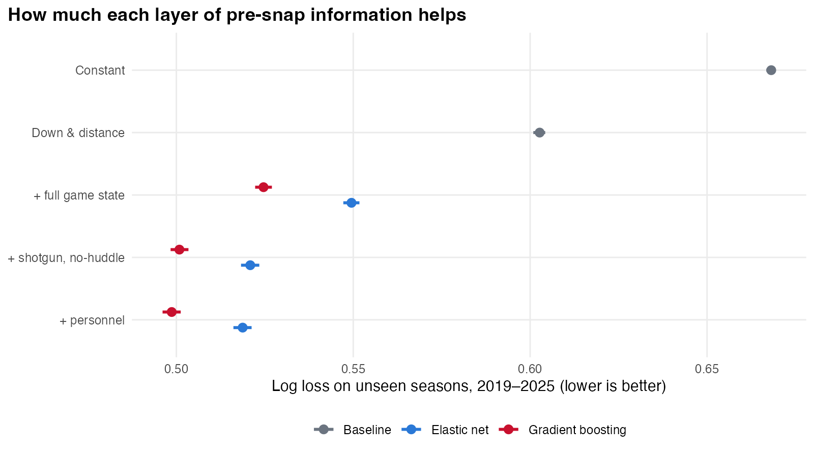
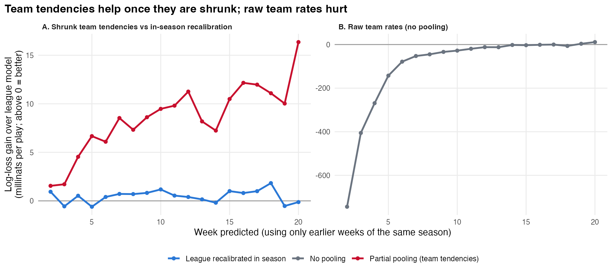
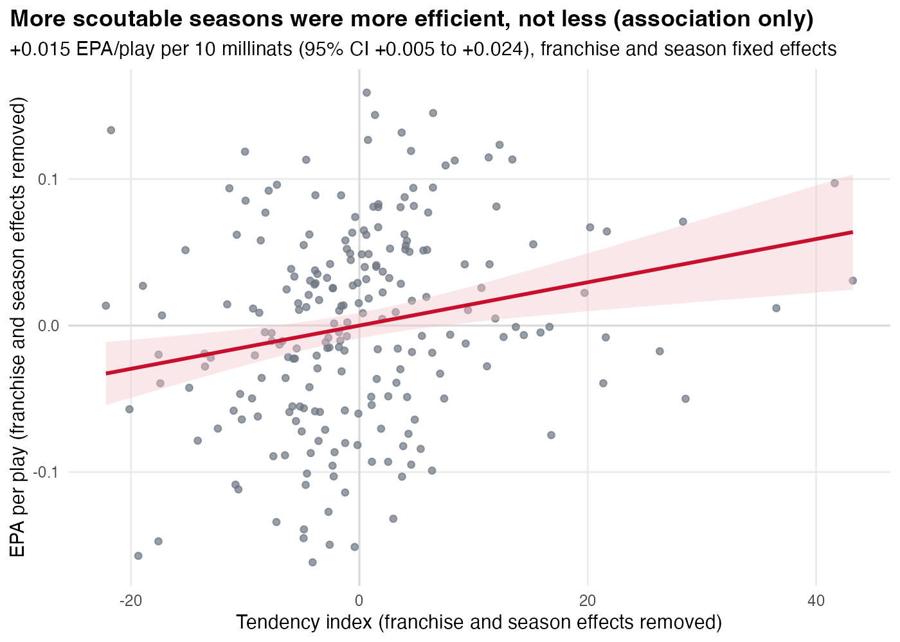

Calling run vs pass on unseen seasons from pre-snap information, and measuring how much each offense gives away beyond league norms, with honest sample sizes.
342,254 offensive plays from 2016–2025 (nflverse play-by-play, participation and FTN charting). Inputs are things a defense sees before the snap: down, distance, field position, clock, score, timeouts, shotgun, no-huddle and personnel. Test seasons are 2019–2025.

Held-out log loss by information layer, pooled over 2019–2025, with 95% game-bootstrap intervals (most are narrower than the dots).
| Model | Log loss | Accuracy | AUC | Calibration slope |
|---|---|---|---|---|
| Always the training pass rate | 0.668 | 61.1% | 0.50 | — |
| Down & distance (13 situations) | 0.603 | 62.5% | 0.68 | 1.02 |
| + full game state (gradient boosting) | 0.525 | 71.1% | 0.79 | 0.99 |
| + shotgun, no-huddle | 0.501 | 74.4% | 0.82 | 0.97 |
| + personnel | 0.499 | 74.5% | 0.82 | 0.98 |
| Same inputs, elastic net | 0.519 | 73.6% | 0.81 | 0.98 |
242,387 test plays. Both learners were tuned on the latest training season only. Every step is significant (bootstrap CIs exclude zero); personnel adds 2.2 millinats per play.

Week-ahead gain over the league model when a team's earlier weeks are used. A: shrunk tendencies (red) against an in-season league recalibration (blue). B: raw team rates, which are far worse early in the season.

Within franchise: +0.015 EPA per play per 10 millinats of tendency index (95% CI +0.005 to +0.024). An association only.
Consistent formation detail exists only from 2022, so earlier seasons rely on the shotgun flag and personnel, and the main model understates predictability. Personnel uses roster positions. The efficiency link is confounded by quarterback and roster quality, game script and coaching. App intervals treat the league model as known. Scouting tables are descriptive; every predictive claim comes from held-out tests.
Data: nflverse play-by-play (CC BY 4.0). Participation comes from NFL Next Gen Stats (through 2022) and FTN Data (2023 on), via nflverse (CC BY-SA 4.0). Derived results are CC BY-SA 4.0. Not affiliated with or endorsed by the NFL, nflverse or FTN.